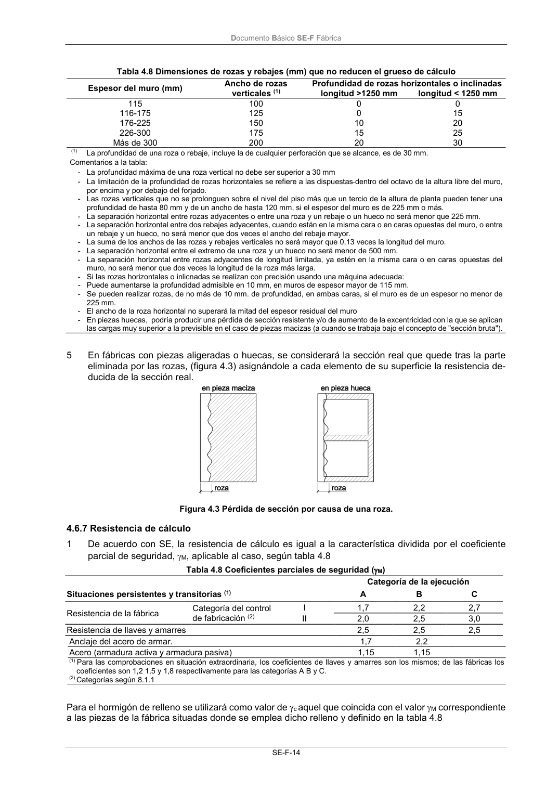

DB-SE-F · 4.6.7 Resistencia de cálculo · versión 2019-12-20
SHA256: e3e0805c3b4c307519c26dc34c3fdbf143d842edd013c91b0f52d2c73403d91c · página física 18 de 70 · métodos de encabezado
solo si están cotejados.
Formatos: Markdown · JSON de bloques · PDF p. 18 · imagen PNG
Documento Básico SE-F Fábrica SE-F-14 Tabla 4.8 Dimensiones de rozas y rebajes (mm) que no reducen el grueso de cálculo Espesor del muro (mm) Ancho de rozas Profundidad de rozas horizontales o inclinadas verticales (1) longitud >1250 mm longitud < 1250 mm 115 100 0 0 116-175 125 0 15 176-225 150 10 20 226-300 175 15 25 Más de 300 200 20 30 (1) La profundidad de una roza o rebaje, incluye la de cualquier perforación que se alcance, es de 30 mm. Comentarios a la tabla: - La profundidad máxima de una roza vertical no debe ser superior a 30 mm - La limitación de la profundidad de rozas horizontales se refiere a las dispuestas dentro del octavo de la altura libre del muro, por encima y por debajo del forjado. - Las rozas verticales que no se prolonguen sobre el nivel del piso más que un tercio de la altura de planta pueden tener una profundidad de hasta 80 mm y de un ancho de hasta 120 mm, si el espesor del muro es de 225 mm o más. - La separación horizontal entre rozas adyacentes o entre una roza y un rebaje o un hueco no será menor que 225 mm. - La separación horizontal entre dos rebajes adyacentes, cuando están en la misma cara o en caras opuestas del muro, o entre un rebaje y un hueco, no será menor que dos veces el ancho del rebaje mayor. - La suma de los anchos de las rozas y rebajes verticales no será mayor que 0,13 veces la longitud del muro. - La separación horizontal entre el extremo de una roza y un hueco no será menor de 500 mm. - La separación horizontal entre rozas adyacentes de longitud limitada, ya estén en la misma cara o en caras opuestas del muro, no será menor que dos veces la longitud de la roza más larga. - Si las rozas horizontales o inlicnadas se realizan con precisión usando una máquina adecuada: - Puede aumentarse la profundidad admisible en 10 mm, en muros de espesor mayor de 115 mm. - Se pueden realizar rozas, de no más de 10 mm. de profundidad, en ambas caras, si el muro es de un espesor no menor de 225 mm. - El ancho de la roza horizontal no superará la mitad del espesor residual del muro - En piezas huecas, podría producir una pérdida de sección resistente y/o de aumento de la excentricidad con la que se aplican las cargas muy superior a la previsible en el caso de piezas macizas (a cuando se trabaja bajo el concepto de "sección bruta"). 5 En fábricas con piezas aligeradas o huecas, se considerará la sección real que quede tras la parte eliminada por las rozas, (figura 4.3) asignándole a cada elemento de su superficie la resistencia de- ducida de la sección real. Figura 4.3 Pérdida de sección por causa de una roza. 4.6.7 Resistencia de cálculo 1 De acuerdo con SE, la resistencia de cálculo es igual a la característica dividida por el coeficiente parcial de seguridad, M, aplicable al caso, según tabla 4.8 Tabla 4.8 Coeficientes parciales de seguridad (M) Categoría de la ejecución Situaciones persistentes y transitorias (1) A B C Resistencia de la fábrica Categoría del control de fabricación (2) I 1,7 2,2 2,7 II 2,0 2,5 3,0 Resistencia de llaves y amarres 2,5 2,5 2,5 Anclaje del acero de armar. 1,7 2,2 Acero (armadura activa y armadura pasiva) 1,15 1,15 (1) Para las comprobaciones en situación extraordinaria, los coeficientes de llaves y amarres son los mismos; de las fábricas los coeficientes son 1,2 1,5 y 1,8 respectivamente para las categorías A B y C. (2) Categorías según 8.1.1 Para el hormigón de relleno se utilizará como valor de c aquel que coincida con el valor M correspondiente a las piezas de la fábrica situadas donde se emplea dicho relleno y definido en la tabla 4.8
